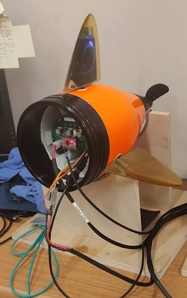

In this internship, our group of 6 interns spent the summer working on improving the Riptide UUV platform. This involved mechanical modifications, mountings for cameras and lights, eletrical modifications, and more. By the end of the summer, we had completely rewritten the software stack from a jumble of C++ builds to a fully ROS compatable python based system. Working alongside everyone and helping each other solve problems was easily one of the biggest highlights of this internship, and I learned a lot from working with my peers.
My primary role was originally working on mechanical modifications, but once it was decided we were rewriting the whole control software, I switched over to software. By the time we reached August and the end of our internship, the UUV was working just as well as it had on the old software stack, but with the added benefit of being far easier to continue to improve. Below are pictures of the nose and tail, where many of the electronics were housed.
Riptide nose, with 3D printed GoPro and flashlight mounts.
Riptide tail during bench testing.